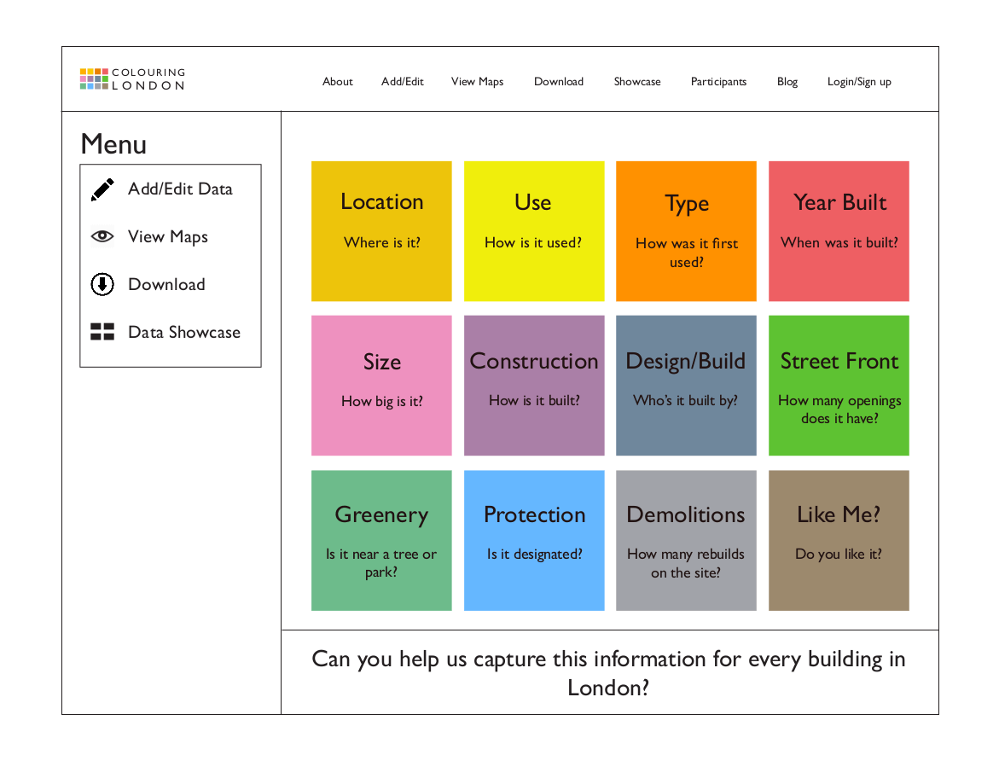
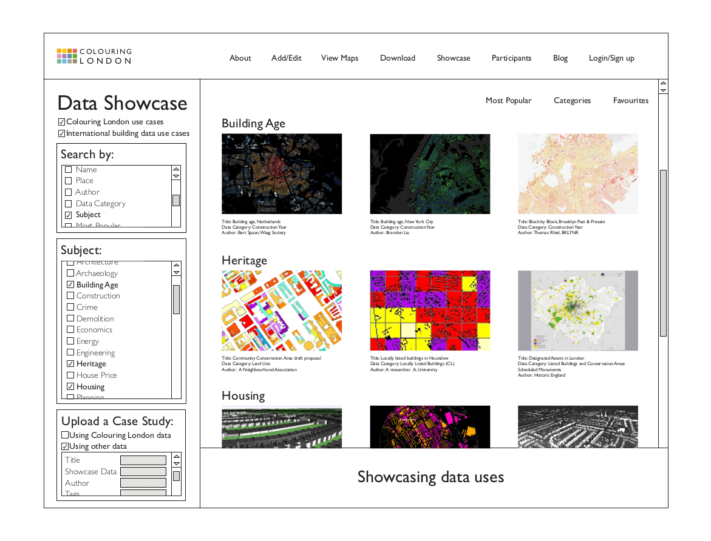

Can you help us capture information on every building in London?
How many buildings are there in London? What are their characteristics? Where are they located and how do they contribute to the city? How adaptable are they? How long will they last, and what are the environmental and socio-economic implications of demolition?
Colouring London is being designed to address these questions by crowdsourcing and visualising information on London’s buildings. We’re releasing the prototype for testing in the late summer. See the slideshow below for what it will look like.
Sign up for updates
- 


- 

Colouring London is being designed and built by the Centre for Advanced Spatial Analysis (CASA), University College London and funded by Historic England. Ordnance Survey is providing building footprints required to collect the data, facilitated by the GLA, and giving access to its API and technical support. It will launch in 2019.
People and Supporting OrganisationsData Categories
12 categories have been chosen in consultation with specialists working in a range of areas, from energy analysis and sustainable urban planning and design to building conservation, community planning, architecture and historical research.
-
Location
Where is it?
-
Use
How is it used?
-
Type
How was it first used?
-
Age
When was it built?
-
Size
How big is it?
-
Construction
How is it built?
-
Design/Build
Who built it?
-
Street Front
How does it relate to the street?
-
Greenery
Is it near a tree or park?
-
Protection
Is it designated?
-
Demolitions
How many rebuilds on the site?
-
Like Me?
Do you like it?
Once built, our platform will allow you to:
View maps
To view the data, navigate to the ‘View Maps’ page and find the category that interests you.
Add and edit data
Find a building and add or edit data for any of the 12 core categories.
See how people are using our data
Find links to visualisations and analysis, art projects and applications relating to the evolution of London, housing, energy, planning, heritage and history—or something we haven’t imagined yet.
Download, remix and reuse
Access bulk downloads of data created through the project to use and reuse under a liberal open data license. Let us know and we’ll feature showcase projects on the Colouring London site.